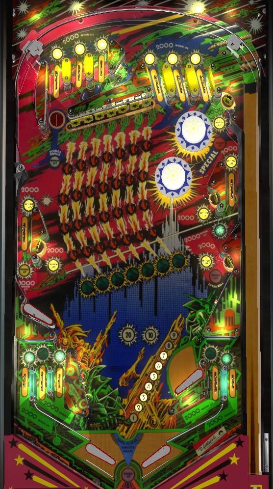

Collect bonus multipliers from lit green lanes, then defend those multipliers by completing the 7-bank of drop targets before the red lights advance to the bottom of the grid of lights. The faster you complete the drop targets, the better reward you get- a lit special for top row, a lit extra ball for second row, a lit bonus collect for third row, nothing for fourth row. If the red lights advance to the fifth (bottom) row, the targets reset, lit extra balls/specials/bonus collects are lost, and lit bonus multipliers in columns of unhit drop targets are deleted (though they can be recovered).
The main goal of Counterforce can be boiled down to clearing the top 7-bank of targets as many times as possible and as quickly as possible. At the start of the game, 7 red lights appear on the playfield, and a pulsing noise can be heard. Knocking down a drop target scores 4,000 points and a bonus advance, and unlights the red light in that column. After some time passes, all remaining red lights will move down one level, and the pulsing noise will become faster and higher pitched. If you clear the entire bank of targets when the red light(s) are still in the top row, the upper right standup target will be lit for a special. If the red lights are in the second row when the bank is cleared, the lowest right standup target will be lit for extra ball. If the lights are in the third row when the bank is cleared, the upper left saucer will be lit for a bonus collect.
Lit yellow rollover lanes and standup targets spot drop targets in the current wave. The upper left set of three top lanes spots targets 3, 5, and 7. The upper right set of three top lanes spots 2, 4, and 6. The left side lane and upper right standup target spot target 1. The left standup target spots 2. The right upper side lane spots 7. The lowest right standup target (extra ball target) spots 6. The middle right standup target spots 4. Any yellow spot lane/target scores 2,000 points when lit or 500 when not lit.
The two upper side lanes and the 5 in/out lanes are each lit green at the start of the game. Rolling through a lit green lane scores 2,000 points, unlights it, and lights a green light underneath the columns of red inserts that represent the invaders. Each collected green lane is worth 1 bonus multiplier, so collecting all 7 gives the max bonus multiplier of 8x. If red light(s) advances past the 4th row, it will destroy the lit green bonus multiplier in its column before the drop target bank resets and a new wave begins. Destroyed bonus multipliers go back to the lit green lane where they were collected, and can be picked up again.
Whenever a wave ends, either because the drop target bank was cleared or because the invading red lights reached the bottom of the grid, another wave begins immediately, and the time it takes the red lights to move down a row will decrease slightly, making bigger awards harder.
If the ball drains mid-wave, all progress on that wave is restored for the next ball, including the location and quantity of any remaining red lights.
The left set of 3 top lanes or the funnel between sets of top lanes feeds the upper left saucer, and it can also be shot directly. When not lit, the saucer scores 5,000 points and spots the two green lights (bonus multipliers) that are positioned on the out lanes. If the saucer is lit, which occurs after clearing an invasion wave where the red lights advanced to the third row of inserts, the saucer will collect the bonus. This mid-ball bonus collect does include the bonus multiplier; afterwards, the base bonus will be reset to 1,000 points, but the multiplier will be kept intact.
Counterforce has one out lane, two in lanes, and a slingshot on the left. On the right, there is one out lane, one in lane, and a structure containing an upper right flipper in the place where the slingshot would be. Be careful using this upper right flipper to get control of the ball, as when the flipper is raised, it can basically funnel a ball directly to the right out lane. All in/out lanes score a bonus advance plus 2,000 points and a bonus multiplier when lit or 500 points when not lit.
Any rollover lane or drop target advances bonus. Base bonus maxes out at 29,000 points. Green lanes award bonus multipliers as described above; these multipliers can be lost by failing to complete an invasion wave at the drop targets. Bonus multipliers are always carried from ball to ball, but base bonus never is.
In competition/novelty play, extra balls and specials score 50,000 points.